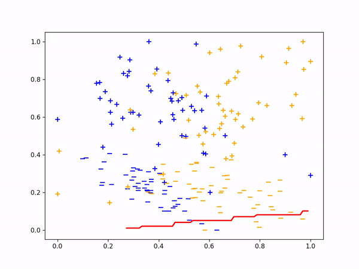

Classification
You will find here the application of DA methods from the ADAPT package on a simple two dimensional DA classification problem.
First we import packages needed in the following. We will use matplotlib Animation tools in order to get a visual understanding of the mselected methods:
[1]:
import numpy as np
import matplotlib.pyplot as plt
import matplotlib
import matplotlib.animation as animation
from sklearn.metrics import accuracy_score
from matplotlib import rc
rc('animation', html='jshtml')
Experimental Setup
We now set the synthetic classification DA problem using the make_classification_da function from adapt.utils.
[2]:
from adapt.utils import make_classification_da
Xs, ys, Xt, yt = make_classification_da()
x_grid, y_grid = np.meshgrid(np.linspace(-0.1, 1.1, 100),
np.linspace(-0.1, 1.1, 100))
X_grid = np.stack([x_grid.ravel(), y_grid.ravel()], -1)
We define here show function which we will use in the following to visualize the algorithms performances on the toy problem.
[3]:
def show(ax, yp_grid=None, yp_t=None, x_grid=x_grid, y_grid=y_grid, Xs=Xs, Xt=Xt,
weights_src=50*np.ones(100), disc_grid=None):
cm = matplotlib.colors.ListedColormap(['w', 'r', 'w'])
# ax = plt.gca()
if yp_grid is not None:
ax.contourf(x_grid, y_grid, yp_grid, cmap=cm, alpha=1.)
ax.plot([Xs[0, 0]], [Xs[0, 1]], c="red", label="class separation")
if disc_grid is not None:
cm_disc = matplotlib.colors.ListedColormap([(1,1,1,0), 'g', (1,1,1,0)])
ax.contourf(x_grid, y_grid, disc_grid, cmap=cm_disc, alpha=0.5)
ax.plot([Xs[0, 0]], [Xs[0, 1]], c="green", label="disc separation")
if yp_t is not None:
score = accuracy_score(yt.ravel(), yp_t.ravel())
score = " - Acc=%.2f"%score
else:
score = ""
ax.scatter(Xs[ys==0, 0], Xs[ys==0, 1], label="source", edgecolors='k',
c="C0", s=weights_src[ys==0], marker="o", alpha=0.9)
ax.scatter(Xs[ys==1, 0], Xs[ys==1, 1], edgecolors='k',
c="C0", s=2*weights_src[ys==1], marker="*", alpha=0.9)
ax.scatter(Xt[yt==0, 0], Xt[yt==0, 1], label="target"+score, edgecolors='k',
c="C1", s=50, marker="o", alpha=0.9)
ax.scatter(Xt[yt==1, 0], Xt[yt==1, 1], edgecolors='k',
c="C1", s=100, marker="*", alpha=0.9)
ax.legend(fontsize=14, loc="lower left")
ax.set_xlabel("X0", fontsize=16)
ax.set_ylabel("X1", fontsize=16)
[4]:
fig, ax = plt.subplots(1, 1, figsize=(8, 6))
show(ax)
plt.show()

As we can see in the figure above (plotting the two dimensions of the input data), source and target data define two distinct domains. We have modeled here a classical unsupervised DA issue where the goal is to build a good model on orange data knowing only the labels (“o” or “*” given by y) of the blue points.
We now define the base model used to learn the task. We use here a neural network with two hidden layer. We also define a SavePrediction callback in order to save the prediction of the neural network at each epoch.
[5]:
import tensorflow as tf
from tensorflow.keras import Sequential
from tensorflow.keras.layers import Input, Dense, Reshape
from tensorflow.keras.optimizers import Adam
def get_model(input_shape=(2,)):
model = Sequential()
model.add(Dense(100, activation='elu',
input_shape=input_shape))
model.add(Dense(100, activation='relu'))
model.add(Dense(1, activation="sigmoid"))
model.compile(optimizer=Adam(0.01), loss='binary_crossentropy')
return model
[6]:
from tensorflow.keras.callbacks import Callback
class SavePrediction(Callback):
"""
Callbacks which stores predicted
labels in history at each epoch.
"""
def __init__(self, X_grid_=X_grid, Xt_=Xt):
self.X_grid = X_grid_
self.Xt = Xt_
self.custom_history_grid_ = []
self.custom_history_ = []
super().__init__()
def on_epoch_end(self, batch, logs={}):
"""Applied at the end of each epoch"""
predictions = self.model.predict_on_batch(self.X_grid).reshape(100, 100)
self.custom_history_grid_.append(predictions)
predictions = self.model.predict_on_batch(self.Xt).ravel()
self.custom_history_.append(predictions)
Src Only
First, let’s fit a network on source data without any adaptation. As we can observe, the “o” labels from the target domain are missclassified. Because of the “” blue points close to the “o” domain, the network learns a class border not regularized enough and then misclassifies the target “” data.
[98]:
np.random.seed(0)
tf.random.set_seed(0)
model = get_model()
save_preds = SavePrediction()
model.fit(Xs, ys, callbacks=[save_preds], epochs=100, batch_size=100, verbose=0);
[99]:
def animate(i):
ax.clear()
yp_grid = (save_preds.custom_history_grid_[i]>0.5).astype(int)
yp_t = save_preds.custom_history_[i]>0.5
show(ax, yp_grid, yp_t)
[104]:
fig, ax = plt.subplots(1, 1, figsize=(8, 6));
ani = animation.FuncAnimation(fig, animate, frames=100, interval=60, blit=False, repeat=True)
[106]:
ani

DANN
We now consider the DANN method. This method consists in learning a new feature representation on which no discriminator network can be able to classify between source and target data.
This is done with adversarial techniques following the principle of GANs.
[107]:
def get_encoder(input_shape=(2,)):
model = Sequential()
model.add(Dense(100, activation='elu',
input_shape=input_shape))
model.add(Dense(2, activation="sigmoid"))
model.compile(optimizer=Adam(0.01), loss='mse')
return model
def get_task(input_shape=(2,)):
model = Sequential()
model.add(Dense(10, activation='elu'))
model.add(Dense(1, activation="sigmoid"))
model.compile(optimizer=Adam(0.01), loss='mse')
return model
def get_discriminator(input_shape=(2,)):
model = Sequential()
model.add(Dense(10, activation='elu'))
model.add(Dense(1, activation="sigmoid"))
model.compile(optimizer=Adam(0.01), loss='mse')
return model
[21]:
from tensorflow.keras.callbacks import Callback
class SavePredictionDann(Callback):
"""
Callbacks which stores predicted
labels in history at each epoch.
"""
def __init__(self, X_grid_=X_grid, Xt_=Xt, Xs_=Xs):
self.X_grid = X_grid_
self.Xt = Xt_
self.Xs = Xs_
self.custom_history_grid_ = []
self.custom_history_ = []
self.custom_history_enc_s = []
self.custom_history_enc_t = []
self.custom_history_enc_grid = []
self.custom_history_disc = []
super().__init__()
def on_epoch_end(self, batch, logs={}):
"""Applied at the end of each epoch"""
predictions = model.task_.predict_on_batch(
model.encoder_.predict_on_batch(self.X_grid)).reshape(100, 100)
self.custom_history_grid_.append(predictions)
predictions = model.task_.predict_on_batch(
model.encoder_.predict_on_batch(self.Xt)).ravel()
self.custom_history_.append(predictions)
predictions = model.encoder_.predict_on_batch(self.Xs)
self.custom_history_enc_s.append(predictions)
predictions = model.encoder_.predict_on_batch(self.Xt)
self.custom_history_enc_t.append(predictions)
predictions = model.encoder_.predict_on_batch(self.X_grid)
self.custom_history_enc_grid.append(predictions)
predictions = model.discriminator_.predict_on_batch(
model.encoder_.predict_on_batch(self.X_grid)).reshape(100, 100)
self.custom_history_disc.append(predictions)
[22]:
from adapt.feature_based import DANN
save_preds = SavePredictionDann()
model = DANN(get_encoder(), get_task(), get_discriminator(),
lambda_=1.0, optimizer=Adam(0.001), random_state=0)
model.fit(Xs, ys, Xt,
callbacks=[save_preds],
epochs=500, batch_size=100, verbose=0);
[23]:
enc_s = np.concatenate(save_preds.custom_history_enc_s)
enc_t = np.concatenate(save_preds.custom_history_enc_t)
enc = np.concatenate((enc_s, enc_t))
x_min, y_min = enc.min(0)
x_max, y_max = enc.max(0)
x_min, y_min = (0., 0.)
x_max, y_max = (1., 1.)
def animate_dann(i):
i *= 3
yp_grid = (save_preds.custom_history_grid_[i]>0.5).astype(int)
yp_t = save_preds.custom_history_[i]>0.5
ax1.clear()
ax2.clear()
ax1.set_title("Input Space", fontsize=16)
show(ax1, yp_grid, yp_t)
ax2.set_title("Encoded Space", fontsize=16)
Xs_enc = save_preds.custom_history_enc_s[i]
Xt_enc = save_preds.custom_history_enc_t[i]
X_grid_enc = save_preds.custom_history_enc_grid[i]
x_grid_enc = X_grid_enc[:, 0].reshape(100,100)
y_grid_enc = X_grid_enc[:, 1].reshape(100,100)
disc_grid = (save_preds.custom_history_disc[i]>0.5).astype(int)
show(ax2, yp_grid, yp_t,
x_grid=x_grid_enc, y_grid=y_grid_enc,
Xs=Xs_enc, Xt=Xt_enc, disc_grid=disc_grid)
ax2.set_xlabel("U0", fontsize=16)
ax2.set_ylabel("U1", fontsize=16)
ax2.set_xlim(x_min, x_max)
ax2.set_ylim(y_min, y_max)
[108]:
fig, (ax1 , ax2) = plt.subplots(1, 2, figsize=(16, 6))
ani = animation.FuncAnimation(fig, animate_dann, interval=60, frames=166, blit=False, repeat=True)
[109]:
ani

[ ]:
ani.save('dann.gif', writer="imagemagick")
As we can see on the figure above, when applying DANN algorithm, source data are projected on target data in the encoded space. Thus a task network trained in parallel to the encoder and the discriminator is able to well classify “o” from “*” in the target domain.
Instance Based
Finally, we consider here the instance-based method KMM. This method consists in reweighting source instances in order to minimize the MMD distance between source and target domain. Then the algorithm trains a classifier using the reweighted source data.
[20]:
from adapt.instance_based import KMM
save_preds = SavePrediction()
model = KMM(get_model(), gamma=1, random_state=0, loss="mae")
model.fit(Xs, ys, Xt,
callbacks=[save_preds],
epochs=100, batch_size=100, verbose=0);
Fit weights...
pcost dcost gap pres dres
0: 4.1412e+04 -1.3491e+06 3e+07 4e-01 2e-15
1: 1.8736e+02 -2.9533e+05 4e+05 2e-03 5e-13
2: 2.0702e+02 -3.6581e+04 4e+04 2e-05 7e-14
3: 8.2217e+01 -1.6809e+04 2e+04 7e-06 4e-14
4: -3.5699e+03 -2.6162e+04 2e+04 7e-06 3e-14
5: -3.6501e+03 -7.6959e+03 4e+03 1e-06 5e-15
6: -3.8524e+03 -8.5199e+03 5e+03 4e-16 2e-16
7: -4.0411e+03 -4.6607e+03 6e+02 2e-16 2e-16
8: -4.0654e+03 -4.4933e+03 4e+02 2e-16 1e-16
9: -4.0776e+03 -4.1640e+03 9e+01 2e-16 2e-16
10: -4.0853e+03 -4.1556e+03 7e+01 2e-16 2e-16
11: -4.0894e+03 -4.0973e+03 8e+00 2e-16 1e-16
12: -4.0903e+03 -4.0934e+03 3e+00 1e-16 2e-16
13: -4.0906e+03 -4.0912e+03 6e-01 1e-16 1e-16
14: -4.0906e+03 -4.0911e+03 4e-01 2e-16 1e-16
15: -4.0907e+03 -4.0908e+03 1e-01 2e-16 1e-16
16: -4.0907e+03 -4.0908e+03 5e-02 2e-16 2e-16
17: -4.0908e+03 -4.0908e+03 2e-02 2e-16 1e-16
18: -4.0908e+03 -4.0908e+03 3e-03 1e-16 2e-16
Optimal solution found.
Fit Estimator...
[21]:
def animate_kmm(i):
ax.clear()
yp_grid = (save_preds.custom_history_grid_[i]>0.5).astype(int)
yp_t = save_preds.custom_history_[i]>0.5
weights_src = model.predict_weights().ravel() * 50
show(ax, yp_grid, yp_t, weights_src=weights_src)
[110]:
fig, ax = plt.subplots(1, 1, figsize=(8, 6))
ani = animation.FuncAnimation(fig, animate_kmm, interval=60, frames=100, blit=False, repeat=True)
[111]:
ani